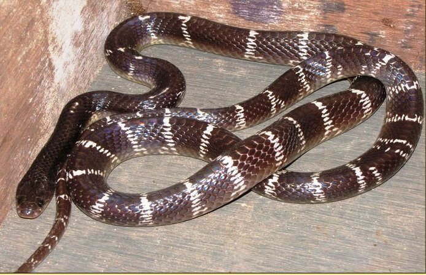

करैतCommon Krait
Bungarus caeruleus · Elapidae · REP-0006

- Scientific name
- Bungarus caeruleus (Schneider, 1801)
- Family
- Elapidae
- Hindi
- करैत
- Status here
- native
- IUCN
- not evaluated
When to look कब देखें
Present all year.
करैत / Common Krait
Bungarus caeruleus (Schneider, 1801) — Elapidae
करैत — भारतीय उपमहाद्वीप का सबसे घातक विषैला सांप, जो शांत, शर्मीला और पूरी तरह से निशाचर (nocturnal) होता है। इसका शरीर चमकीला स्टील-जैसा काला या नीला-काला होता है, जिस पर पतली सफेद दोहरी धारियां (crossbands) होती हैं। इसकी रीढ़ की हड्डी के ऊपर की शल्कें (vertebral scales) विशिष्ट रूप से षटकोणीय (hexagonal) और बड़ी होती हैं। यह सांप अक्सर रात के समय चूहों और अन्य छोटे सांपों की तलाश में ग्रामीण घरों में प्रवेश करता है। इसके काटने पर दर्द महसूस नहीं होता, जिसके कारण अक्सर सोते हुए लोगों को इसकी भनक नहीं लगती और सुबह तक न्यूरोटॉक्सिक विष के कारण सांस रुकने से मृत्यु हो जाती है।
Quick Identification त्वरित पहचान
| Feature | Description |
|---|---|
| Form | Slender, cylindrical body; skin is highly polished, glossy, and iridescent steel-black or blue-black |
| Markings | 40–50 narrow white crossbands, often occurring in distinct pairs; bands are absent on the head/neck, starting midbody |
| Scales | A row of distinctly enlarged, hexagonal vertebral scales running down the center of the back |
| Head | Small, flat, scarcely distinct from the neck; eyes are small, dark, with indistinct pupils |
| Behaviour | Strictly nocturnal; inactive by day, coiling its body and hiding its head beneath the coils when threatened |
Field tip: A glossy steel-black snake with narrow white double-stripes that begin a short distance behind the head. Unlike harmless lookalikes, it has a line of enlarged hexagonal scales along its backbone. If found inside a house at night, do not touch it; maintain a safe distance.
Morphology आकारिकी
Biometrics (typical measurements for adults in northern India):
| Measurement | Range |
|---|---|
| Snout-vent length (SVL) | 80–120 cm |
| Tail length | 10–18 cm |
| Total length | 90–140 cm |
Body: Elongated, slender, and cylindrical. The scales are smooth and highly polished. A key diagnostic feature is the vertebral scale row (running along the spine), which is noticeably larger than the surrounding scales and hexagonal in shape.
Coloration: The dorsal side is a deep, glossy jet-black or dark steel-blue. It features 40–50 narrow white crossbars, often arranged in pairs. The head and neck are solid black, with the first white band starting about one-third of the way down the body. The belly (ventral side) is solid glossy white.
Head: Small, flat, scarcely broader than the neck. The snout is short and rounded. The eyes are small and dark, with round pupils that are hard to distinguish from the dark iris.
Dentition: Front-fanged (proteroglyphous). Possesses a pair of short, fixed, hollow fangs on the anterior upper jaw, followed by 2–4 smaller solid teeth.
Ecological Role पारिस्थितिक भूमिका
Ophiophagous predator. The Common Krait is primarily ophiophagous, meaning it preys on other snakes. It consumes blind snakes, rat snakes, and even smaller individuals of its own species (cannibalism). It also preys on mice, frogs, and lizards.
Nocturnal regulator. By hunting exclusively at night in fields and village borders, it plays a key role in regulating the populations of nocturnal rodents and small reptiles.
Life Cycle / Phenology जीवन चक्र
- Seasonality: Active from March to November. During the cold winter months (December–February), it hibernates deep inside rodent burrows, termite mounds, or wood piles.
- Mating: Mating occurs in spring (March–May).
- Egg-laying: Females lay a clutch of 8 to 15 white, leathery, elongated eggs in rodent burrows or under leaf litter in May–June.
- Incubation: The female remains near the eggs for a short period. The eggs hatch in 60 days, and the hatchlings are fully venomous from the moment they emerge.
Host Plants or Prey आहार
Primary prey items:
- Other snakes (blind snakes, Ptyas mucosa, and smaller kraits).
- Field Mice (Mus musculus) and young rats.
- House Geckos (Hemidactylus spp.) and garden lizards.
- Toads and frogs.
Predators / Natural Enemies शत्रु
- Indian Grey Mongoose (Herpestes edwardsi, MAM-0002) — Hunts kraits during their crepuscular transitions.
- Birds of Prey — Crested Serpent Eagles swoop down on kraits caught in the open at dawn.
- Wild Boars (Sus scrofa) — Dig up nests to consume krait eggs.
- Indian Cobra (Naja naja, REP-0005) — Opportunistically preys on kraits.
Agricultural / Human Relevance कृषि प्रासंगिकता
Rodent control. Kraits hunt crop-damaging rodents around grain bins and haystacks at night. Their slender bodies allow them to follow rodents into deep burrows.
The "Big Four" and sleep-time bites. The Common Krait is one of the "Big Four" venomous snakes in India, responsible for the highest rate of sleep-time snakebite deaths in rural Uttar Pradesh. It enters mud-walled homes during the monsoon to seek dry shelter and warmth, often crawling onto bedding where sleeping humans reside.
Safety and First Aid सुरक्षा और प्राथमिक चिकित्सा
[!WARNING]
Venom type: Highly neurotoxic. The venom contains pre-synaptic neurotoxins (beta-bungarotoxins) that permanently block the release of chemical signals from nerves to muscles. It is 15 times more potent than cobra venom.
The painless bite danger: Krait bites typically occur at night when the victim is sleeping on the floor. The bite is virtually painless (like a mosquito or ant bite) and leaves no swelling, redness, or local pain. The victim often wakes up in the morning with symptoms like abdominal cramps, joint pain, throat tightness, and drooping eyelids, which are frequently misdiagnosed as indigestion or colic until paralysis sets in.
Prevention rules:
- NEVER sleep on the floor. Always sleep on an elevated bed (charpai, takht, or cot).
- ALWAYS use a mosquito net (Machhardani). Tucking the mosquito net tightly under the mattress creates a physical barrier that is extremely effective at preventing kraits from crawling onto the bed.
- Always use a strong torch (flashlight) when walking outdoors at night.
- Keep firewood stacks and debris away from the main living quarters.
First aid rules (in case of a bite):
- DO NOT cut, burn, or apply local medicine to the bite area.
- DO NOT attempt to suck out the venom.
- DO NOT apply a tight tourniquet.
- DO NOT delay by visiting traditional healers (ojhas).
- DO keep the patient calm and completely still.
- DO immobilize the bitten limb using a wooden splint and clean bandage.
- DO transport the patient immediately to the nearest government hospital or Community Health Center (CHC) that stocks Polyvalent Anti-Snake Venom (ASV). ASV is the only treatment that can save the patient's life.
Expected Locally स्थानीय रूप से अपेक्षित
Not a field record. Written from published accounts for eastern Uttar Pradesh. No confirmed local sighting yet — if you have seen it, that is what the atlas needs.
अभी तक स्थानीय पुष्टि नहीं। यह विवरण प्रकाशित स्रोतों से है, किसी अवलोकन से नहीं।
Commonly found in rural areas of Basti district, especially around old brick walls, haystacks, and thatched houses. Sightings and bite incidents peak during the monsoon (July–September) when rising water tables drive kraits out of their underground burrows, forcing them to seek dry shelter inside houses.
Distribution वितरण
Global range: Native across South Asia, including Pakistan, India, Nepal, Bangladesh, and Sri Lanka.
In India: Distributed throughout the plains, agricultural zones, and low hills up to 1,500 metres.
In Uttar Pradesh: Common resident in all rural and suburban districts across the state.
In Basti district / eastern UP: Widespread in all rural villages and cultivated fields.
Range notes: No significant range changes documented.
Research Questions शोध प्रश्न
Anyone can investigate these | कोई भी इन प्रश्नों की जाँच कर सकता है
- How many households in your village use mosquito nets regularly, and does this correspond to zero krait bite incidents? / आपके गाँव में कितने परिवार नियमित रूप से मच्छरदानी का उपयोग करते हैं, और क्या यह करैत के काटने की शून्य घटनाओं से मेल खाता है? — Conduct a household safety survey.
- What is the ratio of krait bite occurrences in mud-walled homes vs. brick-and-cement homes in Basti? / बस्ती में मिट्टी के घरों बनाम पक्के घरों में करैत के काटने की घटनाओं का अनुपात क्या है? — Collect medical record data from local hospitals.
- What is the primary snake species consumed by Common Kraits in agricultural fields? — Document krait feeding observations.
- How does the venom yield of adult kraits change between the active monsoon and pre-hibernation autumn? — Review toxicological literature.
- Can local residents distinguish the Common Krait from the harmless Common Wolf Snake? / क्या स्थानीय लोग करैत को हानिरहित भेड़िया सांप (Wolf Snake) से अलग पहचान सकते हैं? — Conduct an identification test using photos of both snakes.
Similar Species मिलती-जुलती प्रजातियाँ
| Species | How to tell apart | हिंदी |
|---|---|---|
| Common Wolf Snake (Lycodon aulicus) | Non-venomous; white bands start immediately behind the head (not midbody); lacks enlarged hexagonal vertebral scales; eyes have vertical slits | भेड़िया सांप — हानिरहित, आँख की पुतली खड़ी |
| Barred Wolf Snake (Lycodon striatus) | Non-venomous; smaller; white bands are more speckled and contain black dots; lacks hexagonal vertebral scales | चित्तीदार भेड़िया सांप — हानिरहित |
| Banded Krait (Bungarus fasciatus) | Large, triangular body; thick, alternating yellow and black bands; blunt tail; rare in Basti plains | अहिराज / बैंडेड करैत — पीली-काली धारियां |
Field rule: Highly polished steel-black body with narrow white crossbands starting midbody, combined with enlarged hexagonal vertebral scales along the backbone, identifies Bungarus caeruleus.
Taxonomy & Classification वर्गीकरण
Original description. Johann Gottlob Schneider described the Common Krait as Pseudoboa caerulea in 1801 in his work Historiae Amphibiorum naturalis et literariae (Vol. 2, p. 284). The type locality is Vizagapatam, India. It was later moved to the genus Bungarus by Daudin. The genus name Bungarus is derived from the Telugu word Bangarum (gold). The specific epithet caeruleus means dark blue in Latin.
Subspecies. Monotypic — no subspecies are currently recognised.
Family and order placement. Placed in the order Squamata, suborder Serpentes, family Elapidae. Elapidae is characterized by short, fixed fangs at the front of the upper jaw.
Phylogenetic notes. Bungarus caeruleus is the type species of the genus Bungarus. It is closely related to Bungarus sindanus (Sind Krait).
IUCN status rationale. Not formally assessed by the IUCN Red List (Not Evaluated). However, the species is protected under Schedule II of the Indian Wildlife Protection Act, 1972, which prohibits hunting, trade, and capture.
Photo Gallery फोटो गैलरी
References संदर्भ
- Schneider, J.G. (1801). Historiae Amphibiorum naturalis et literariae. Vol. 2. Frommann, Jena, p. 284.
- Smith, M.A. (1943). The Fauna of British India: Reptilia and Amphibia. Vol. 3 — Serpentes. Taylor & Francis, London.
- Whitaker, R. & Captain, A. (2004). Snakes of India: The Field Guide. Draco Books, Chennai.
- Bawaskar, H.S. & Bawaskar, P.H. (2002). Profile of snakebite envenoming in western Maharashtra, India. Transactions of the Royal Society of Tropical Medicine and Hygiene, 96(1), 79–84.
- World Health Organization (2016). Guidelines for the Management of Snakebites in Southeast Asia. WHO Regional Office, New Delhi.
- GBIF Occurrence Data — Bungarus caeruleus, Uttar Pradesh (2010–2025).
Source file: species/fauna/reptiles/common_krait.md